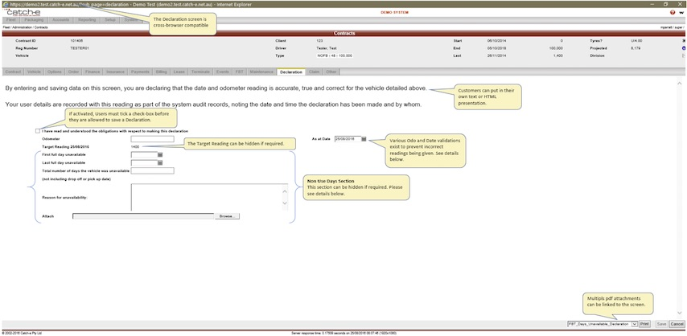

Standard Reports:FBT Declaration Email
From Help wiki
Main Page → Reporting / Standard Reports → Fbt Declaration Email → FBT Event Email Placeholders
Contents |
FBT Emailing Overview
Visit the Email Setup page for an overview of system email capabilities.
The Fbt Declaration Advice Email and the Fbt Declaration Email are part of a process to collect FBT Odometer readings from Drivers using a URL link that links to the Contracts / Declaration tab in Catch-e.
Drivers can be emailed en mass to collect periodic or annual Odometer readings for FBT Reporting.
These bulk email reports are governed by a number of system flags that determine which drivers will be sent an email.
You can also send this email to a driver from the Contracts / Events tab. Use this approach to collect an Odometer reading at the end of a lease term, or if you need to re-issue a URL to a driver.
You can send an FBT Declaration email to any driver that has a valid email address. Alerts are given if the Client and Contract settings would not allow the bulk FBT Declaration email to be sent to this driver.

FBT Declaration Email Reports - process steps
- Go to Reporting / Standard Reports and run 'FBT Advice Email' (this enables you to provide drivers with explanatory details ahead of time)
- Go to System / Mail Queue and send the pending emails
- An FBTA Event is created in Contract Events to store the Advice email
- Go to Reporting / Standard Reports and run 'FBT Declaration Email' (this contains the URL link to the Contracts / Declarations tab in Catch-e)
- Go to System / Mail Queue and send the pending emails
- An FBTD Event is created in Contract Events to store the Declaration email
- Driver clicks on the URL and can enter an Odometer Reading (a variety of system checks for Odo and Date validation are performed)
- The driver can continue to use the URL to access the Contracts / Declarations tab in Catch-e until either
- The Odometer Reading has been entered by the driver
- The Role Timeout for 'fbt_declaration' has been reached
- An FBTC Event is created in Contract Events to record the Confirmation email.
- The driver can continue to use the URL to access the Contracts / Declarations tab in Catch-e until either
| |
Data and Sender (Set-up by Client)
Set Client, Contract Type and Contract checkboxes
For a Driver to receive a bulk FBT email, ALL of the following conditions must be met:
- Fleet / Controls / Accounts / Contract Types / Details "FBT Email" checkbox must be checked ON
- Fleet / Administration / Clients / Contract Defaults "FBT Email Novated" or "FBT Email Other" must be checked ON (whichever is relevant to the contract)
- Fleet / Administration / Drivers / Contact "Email" must contain a valid email address
- Fleet / Administration / Contracts / FBT "FBT Email" must be checked ON
- Fleet / Administration / Contracts / FBT "Benefit Type" shows Statutory or Operating - Exempt vehicles are excluded.
- Either:
- Fleet / Administration / Contracts / Contract "Suspend Date" is blank or dated after the report run date OR
- Fleet / Administration / Contracts / FBT "FBT Liability End Date" is blank or dated after the report run date
Illustration of checkbox hierarchy
 .
.
Set Email Sender Name and Address
The user “_fbt_dec_” needs to contain an email address for all FBT emails to work correctly. The “_fbt_dec_” "Name" and "Email" is displayed on all FBT emails that are sent via Reports, Events and Auto-confirmation.
If no email address exists in “_fbt_dec_”, Event emails can still be sent and will show the "Name" and "Email" of the sender. Report emails will fail to send.
Go to System / Users / Details and search for the user “_fbt_dec_” to confirm or update the relevant details for "Name" and "Email".
| |
Note: The user “_fbt_dec_” is a system user and cannot be deleted. Email addresses for “_fbt_dec_” can only be deleted by support@catch-e.com.au.
Email Signatures
The standard email signature is set-up to display the following details from the user record:
- Name
- Job Title
- Phone
- Organisation
This can be replaced with text if desired. The signature details are not compatible with an HTML presentations.
Report emails use the signature details of "_fbt_dec_".
Event emails use the signature details of the sender.
Auto-confirmation emails reflect the signature of th originating email (i.e. if from Reports then "_fbt_dec_" and if from Events, then the user).
Email Footers
The standard emails are set-up to utilise the standard email footer.
The standard email footer is not compatible with HTML presentations and if used, they should contain an embedded footer.
Each email template in [gb_templates] contains a tick-box to switch the email footer ON or OFF and refers to [gb_controls]mail_footer.
Set Session Timeout for Role
The role timeout determines how long the declaration screen is accessible for before it becomes invalid.
- Go to System / Roles
- Role - select or enter 'fbt_declaration'
- Session Timeout - check and update the timeout to suit you process.
E.g.
- I want to send the emails from the mail queue at 5pm on 30/03/2025
- I want drivers to be able to access the declaration screen until midnight on 02/04/2025
- Count the time required from when I plan to send the emails from the mail queue to ending the access.
- Send time 30/03/2025 17:00 - Expiry date/time 02/04/2025 24:00 = 2 Days, 7 Hours
Hint! - you may want to communicate the expiry time to drivers as something like “this link will be available to you for 2 days (48 hours) from the time it was sent” which enables you to set a generic timeout.
Configuration (set-up by Catch-e)
Three emails are generated in the FBT process that is sent to Drivers. Like system messages, these can be customised and Catch-e recommends this. A sample of each is provided. The emails can be set-up to use HTML for a more attractive presentation.
Emails and Attachments
[gb_template_attachments] /clients/demo/core/fleet/reports/attachments/
All of the emails listed below are capable of holding one or more attachments (PDF, XLS, DOC and others). For example: to provide further instruction, a Days Out of Use form and/or a Contributions form. The attachments can be unique to each email that is set-up.
Important: Any documents that are saved down as FBT_*.pdf will also be available on the FBT Declaration screen.
Visit FBT Event Email Placeholders to view placeholders that are available for use in the email templates below.
FBTA – FBT Advice Email
[gb_templates] pdf_fbt_declaration_advice_email (used for report generation, not email data)
[gb_templates]sub_name to be populated with posting_class_code FBTA
[gb_templates] pdf_fbt_declaration_advice_email_message
[gb_templates]sub_name to be populated posting_class_code FBTA
This email is intended to advise Drivers of the impending requirement to furnish an FBT return.
Sample email:
Dear #given_name#,
On the 31st March, we will be asking you to furnish an odometer reading for your vehicle #reg_no#,#manufacturer_name##model_name# for your employer's FBT reporting requirements.
The email will contain a URL to enable you to lodge your reading electronically. When your odometer reading is known, click on the URL and enter the reading. The URL is good for one use only - do not click onto the URL until you are ready to furnish your return.
FBTD – FBT Declaration Email
[gb_templates] pdf_fbt_declaration_declaration_email (used for report generation, not email data)
[gb_templates] pdf_fbt_declaration_declaration_email_message
[gb_templates]sub_name to be populated with posting_class_code FBTD
This email contains a single sign-on URL link to the driver. When the driver clicks on this link, they are taken to the Odometer Declaration page in Catch-e. This page does not have any navigations off the page or a help button. This URL is only accessible to the driver until they have made an Odometer declaration.
A tick-box acknowledging the declaration must be ticked ON by the driver before their odometer reading can be saved. Current odometer reading validations are performed and the driver is warned if the reading is outside those parameters. The driver may over-ride the warning and save the reading anyway.
Date validations (discussed in System Set-up) are also conducted. A reading will not be saved if the validations are not met.
Important: For the URL link to work, javascript must be enabled in the users browser.
Sample email:
Dear #given_name#,
We request that you furnish an odometer reading for your vehicle #reg_no#, #description# to support your employer's FBT reporting requirements.
The URL below enables you to lodge your reading electronically. When you have your odometer reading, click on the URL and enter the reading. The URL will not be available once your return has been furnished.
For the URL link to work, javascript must be enabled in your browser.
If your URL does not appear or work as a hyperlink, please cut and paste the URL directly into your internet browser's address bar:
- #one_shot_declaration_url#
FBTC – FBT Confirmation Email
[gb_templates] pdf_fbt_declaration_confirmation_email_message
[gb_templates]sub_name to be populated with posting_class_code FBTC
This email is an automatically generated email that sends a message back to the driver to confirm the reading they have entered.
Sample email:
Dear #given_name#,
At #entry_date_time# we received an odometer reading from you as follows:
Reg: #reg_no#, #description#
Date: #odometer_date#
Odo: #odometer#
If this entry is not correct, please contact us immediately on #phone#.
System messages
There are 3 system messages that are directed at Drivers which can be customised. System messages can also be authored in HTML for better presentation.
Sample text for each message is provided, but clients are encouraged to provide Catch-e with their own wording to personalise their service.
Declaration Screen Message
[gb_controls]fbt_declaration_instructional_text
By entering and saving data on this screen, you are declaring that the date and odometer reading is accurate, true and correct for the vehicle detailed above. Your user details are recorded with this reading as part of the system audit records, noting the date and time the declaration has been made and by whom.
Internal users can check the presentation of the message and the attachments by navigating to Fleet / Administration / Contracts / Declaration Screen. They can also enter Odometer readings.
Declaration Screen Attachment/s
[gb_template_attachments] /clients/demo/core/fleet/reports/attachments/
One or more pdf documents can be attached to the FBT Declaration Screen. Like the email attachments, these can be used to provide further instruction, a "Days Out of Use" form and/or a "Contributions" form.
These documents are sorted and presented alphabetically on the declaration screen.
| |
Confirmation of successful Odometer entry
[gb_controls]fbt_declaration_entry_accepted
Thank you for visiting the odometer declaration page. Should you wish to make another declaration, please contact your fleet manager for a new login.
Access denied message
[gb_controls]fbt_declaration_access_denied_message
The hyperlink provided to you was a single use link. An Odometer reading has already been recorded using this link OR the link has expired.
To obtain another link, please contact your fleet manager
System Configuration
The following system configurations will be made by Catch-e for each customer as specified in Global Controls.
Role Timeout
The "Session Timeout" that is stored on the role fbt_declaration determines how long the driver can access the URL that is provided in the FBT Declaration email for.
- Go to Roles / Details
- Select the "Role" 'fbt_declaration'
- Review and update the "Session Timeout" fields
Clients / Contract Defaults "FBT Email Novated" - default value for new clients
The record [gb_controls]fm_clients_fbt_email_novated_default sets the default for the Clients/Contract Defaults "FBT Email Novated" field.
The default setting is unchecked, i.e. NO.
Bulk email frequency
[gb_controls]fbt_declaration_action_period
The email frequency can be set as Monthly, Quarterly or Annually. This governs two aspects of the bulk emailing process.
1. If users try to send an email to a driver more than once in the specified period, the email will not generate. E.g. If the frequency is set to Monthly and a bulk email is sent on 25/08/2009, another attempt to send an email on 29/08/2009 will fail. This feature has been developed to prevent users from inadvertently ‘spamming’ their drivers.
The Contract Event Date is used to calculate the frequency. If the status flag of the contract event is set to 'deleted' then the event is ignored when calculating the frequency.
2. When a driver opens their URL link, the frequency that has been set will determine the suggested date that Catch-e provides to the Driver. The suggested date can be overwritten by the Driver.
- E.g. if the email frequency is set as “Monthly” and the driver logs in on 10/08/2009, then the suggested date is 31/07/2009.
- E.g. if the email frequency is set as “Quarterly” and the driver logs in on 10/10/2009, then the suggested date is 31/09/2009.
- E.g. if the email frequency is set as “Yearly” and the driver logs in on 10/04/2009, then the suggested date is 31/03/2009.
- E.g. if the email frequency is set as “Monthly” and the driver logs in on 10/08/2009, then the suggested date is 31/07/2009.
If the vehicle has been suspended, the suspend date will be the suggested date for the declaration.
Valid Date Tolerance
[gb_controls]fbt_declaration_valid_date_tolerance
Define how many days in advance it is acceptable for a driver to enter an Odometer reading. E.g. setting a date of 3 will enable a driver to enter a reading that is future-dated up to 3 days.
Period End Tolerance
[gb_controls]fbt_declaration_period_end_tolerance
The system has a standard back-date tolerance of 30 days for the 'As at Date' that is suggested on the Declaration screen.
E.g. if the email frequency is set as “Quarterly” and the driver logs in on 10/08/2009, then the suggested date is 10/08/2009 and not 30/06/2009 (as this date is beyond the back-date tolerance).
If the driver logs in 10/4/2009 the As at Date is 31/3/2009.
Show Target Reading
[gb_controls]fm.fbt_declaration_show_target_reading_flag
If this flag is set as "yes", then the target odometer reading required for the vehicle to achieve their budgeted kms (and FBT Reporting bracket) is displayed on the Declaration screen, below the Odometer data entry box. The default entry is "no".
Role Timeout Maximum
[gb_controls]role_fbt_declaration_session_timeout_maximum
The maximum allowable expiry time of the role fbt_declaration needs to be set outside the normal system tolerance of 2 days. The default for "fbt_declaration" has been set at 62 days (approx 2 months).
This control allows you to then update the session timeout on the Roles screen to the desired timeout (e.g. 10 days).
Contact Catch-e: mailto:support@catch-e.com.au or phone us on +61 03 9017 3520 if you would like this changed.
The actual role timeout is discussed in the section Set Role timeout. This provides details of why fbt_declaration needs to work differently to other roles and how to set it within the system.
System Notes
- 4112: Add target reading to the Declaration screen. Live 31/03/2011
- 5611: Exclude contracts from FBT Declaration using reports fbt_benefit_type. Live 10/05/2012
- 9175: Take FBT Statutory End Date into account when generating FBT Advisory and FBT Declaration emails. Live 13/03/2014
- 9548: FBT Email Novated Default for new clients. Live 31/03/2014
- 11214: FBT Declaration email exclude at contract level. Live xx/xx/2017
- (DEV-21400) Disable one shot url on FBT declaration success. Live 01/04/2021

{kind=link}